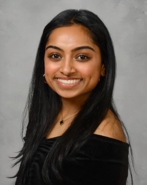

I am a freshman at Carnegie Mellon University studying Information Systems. Throughout my years at CMU, I hope to concentrate in UI/UX design and pursue a minor in Human-Computer Interaction. Outside of academics, I love to dance. I began to dance at the age of 7, participating in an Indian classical dance form known as Kathak.
read more ...